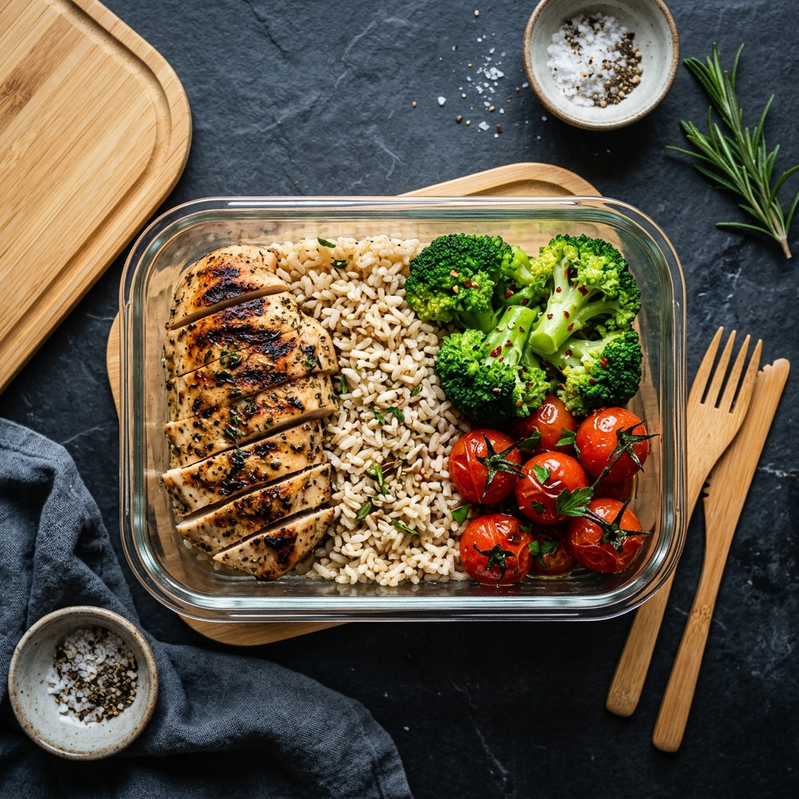

Izgara Tavuk Power Bowl
Esmer pirinç, buharda brokoli ve cherry domates eşliğinde ızgara tavuk göğsü — klasik kas yapıcı öğün.
480
Kalori
42g
Protein
38g
Karb
12g
Yağ
Malzemeler
- 200g tavuk göğsü
- 1 su bardağı esmer pirinç
- 1 kase brokoli
- 6-8 cherry domates
- Zeytinyağı, tuz, karabiber
Hazırlanışı
Pirinci haşlayın. Tavuğu zeytinyağı, tuz ve karabiberle marine edip ızgara veya tavada pişirin. Brokoliyi buğulayın. Kasenin içine pirinci koyun, üzerine tavuk ve sebzeleri yerleştirin.